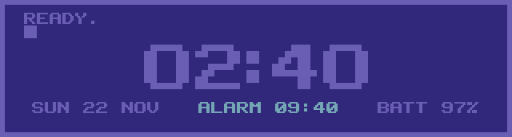
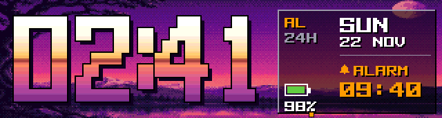
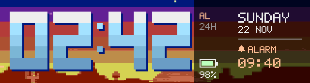

Phosphor
A retro desk gadget for the Waveshare ESP32-S3-Touch-LCD-3.49: clock, weather, internet radio, timers, pixel scenes, three games and small tools, in four looks.




Star on GitHub
Phosphor is free and open source. A star helps other people find it.
This replaces what the board runs now. Whatever is on it, including the Waveshare factory demo, is not kept.
Phosphor does not back it up and cannot restore it.
Already running Phosphor 1.0.x? Install once from here and leave Erase device unticked: your Wi-Fi and settings stay. From then on the installer recognises the board and offers Update by itself, and the board tells you in Settings > About when a newer version is out.
Steps
- Connect the board to the computer with a USB-C data cable.
- Press Install Phosphor. Chrome lists serial ports: pick USB JTAG/serial debug unit
(
cu.usbmodem…on a Mac,COM3or similar on Windows,ttyACM0on Linux). On a first install tick Erase device, confirm, and wait for Installation complete (about a minute). Close the installer window with Next or the ×. - The board restarts and shows a Wi-Fi name like
Phosphor-Setup-1A2Band a QR code. On your phone, join that Wi-Fi (no password). A setup page opens by itself. If it does not, or your browser shows normal websites, the phone is still using mobile data: turn off mobile data, open Safari (or any browser) and typehttp://192.168.4.1in the address bar. - On the setup page (if you see a menu first, tap Configure WiFi):
- tap your home Wi-Fi in the list (2.4 GHz, see below),
- type its password,
- scroll down: under the password there is Device name, already filled in as
phosphor-1a2b. Keep it or change it to something short likedesk: this is the name you type in the next step.Write this name down. You need it in the next step to reach the settings. (Lost it later? Settings > Wi-Fi on the board shows its IP address and a QR code.) - tap Save. The board joins your Wi-Fi and shows the clock. Turn mobile data back on.
- With the phone back on your home Wi-Fi, open
http://<your device name>.local/settingswith the name from step 4. Named itdesk? Then it ishttp://desk.local/settings; kept the default? Something likehttp://phosphor-1a2b.local/settings. There you set your city, language and radio stations.
Troubleshooting
- No "USB JTAG/serial debug unit" in the port list
- Try another cable (many only charge) or another USB port. Still nothing: hold BOOT on the back while you plug the cable in, then try again. Not sure which entry is the board? Unplug it, look at the list, plug it back in: the new entry is the board.
- The board does not join my Wi-Fi
- Most often a mistyped password: phones capitalise the first letter. Hold BOOT for 5 seconds and try again. The ESP32 also only works with 2.4 GHz Wi-Fi: if your router has a separate 5 GHz network (often named "…-5G"), pick the other one.
- The setup Wi-Fi or setup page is gone
- Hold BOOT on the back for 5 seconds. The board forgets the saved Wi-Fi and shows
Phosphor-Setup-…again, until you finish the setup. (When a saved Wi-Fi fails, the board also opens the setup by itself after a restart, but only for 3 minutes.) - The setup page does not open, or the browser shows normal websites
- The phone is using mobile data instead of the board's Wi-Fi. Turn off mobile data, check you are joined to
Phosphor-Setup-…("no internet" there is normal), then typehttp://192.168.4.1in the browser's address bar (withhttp://, or the browser searches for it). - I forgot the device name
- Open your router's list of connected devices: the board shows up under its name (and its IP address works too:
http://192.168.x.x/settings). Or hold BOOT for 5 seconds and set up the Wi-Fi again. desk.localdoes not open- The phone must be on the same Wi-Fi as the board. Some Android phones cannot open
.localaddresses: use a computer, or the board's IP address from Settings > Wi-Fi on the board (http://192.168.x.x/settings). - A radio station does not play
- Use Test on the settings page first. MP3 and AAC streams are tested; some others may not play.
Star on GitHub
Enjoying it on your desk? A star on GitHub is the easiest way to say thanks.
Source, issues and license (GPL-3.0): github.com/melihkoray/phosphor. Made by Melih Koray.